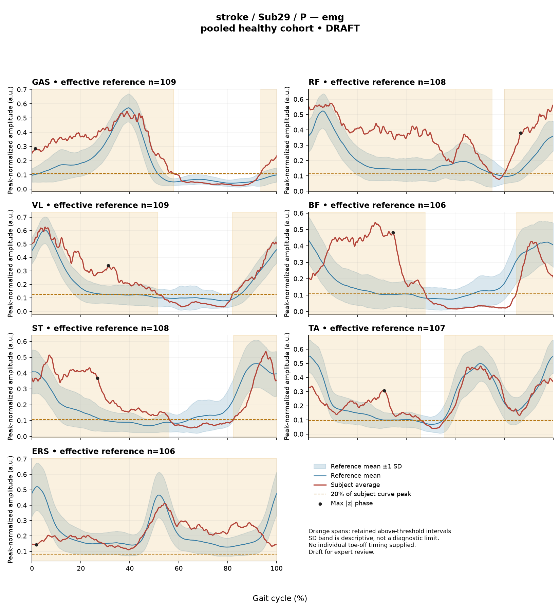
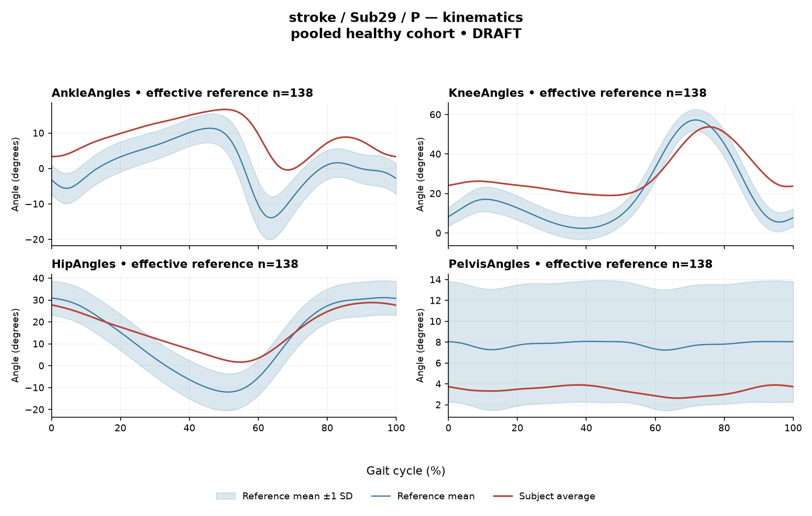

rater2 / Report 16 of 105 / Review spreadsheet row 17
R4835C5BD71F87EC3
Case: stroke_Sub29_P
Read this report independently. Record judgments in the workbook. Browser pages do not save ratings.
Report: exact saved text
# Gait Report Interpretation — Sub29_P **Version:** limited-evidence-v3.1-candidate **Scope:** Research interpretation of a supplied quantitative summary. Not a diagnosis, not a treatment recommendation. --- ## 1. Objective Findings **Participant and side.** Sub29_P is recorded in the stroke group, and the data presented here are from the **paretic** side. The released cycle runs from initial contact of the paretic limb (0%) to the next initial contact of that same limb (100%); these are two successive occurrences of the same event, not a single instant. No intermediate event (toe-off or any phase boundary) is supplied, so all timing below is expressed as a percentage of the analysis cycle only. **Spatiotemporal values as supplied.** - Gait speed 0.57 m/s. The accompanying "limited community ambulator (0.4–0.8 m/s)" label denotes a speed band only; it does not describe measured independence, safety, or real-world mobility. - Cadence 102.0 steps/min. - Step length symmetry index +13.7%, computed with the **successive-footfall** definition. Under the stated sign convention (negative = shorter paretic step), the positive value indicates the **paretic step is the longer of the two** by this index. The alternative instantaneous-heel-position definition yields a different value for some subjects; only the successive-footfall value is available here, so the magnitude should not be treated as definition-independent. **Reference and comparability limits (applies throughout).** The deviation reference actually used for this subject is a pooled cohort of 138 healthy subjects (1001 phase points, main_cohort_excel), pooling both body sides and all ages, and it is **not age- or speed-matched**. The healthy cohort's self-selected speeds span 0.80–1.79 m/s; at 0.57 m/s this subject falls **below that floor**, so **no speed-matched healthy reference exists in this dataset**. Every difference from the reference described below therefore conflates slow-walking effects with any stroke-related control changes, and these data cannot separate the two. Group membership alone does not establish which findings are stroke-related, and a difference from an empirical reference does not by itself establish disease, impairment severity, or a clinical diagnosis. **Channels and fields present vs. not supplied.** - Present: sagittal-plane kinematics for ankle, knee, hip, pelvis (ROM + Gait Variable Score); ensemble-averaged EMG envelopes for GAS, RF, VL, BF, ST, TA, ERS with detected intervals, coverage, peak normalized amplitude and max |z|; two co-contraction indices; composite GPS-like score. - Not supplied in this input: coronal and transverse plane kinematics (not included by definition of the released variables); individual toe-off and matched muscle-specific normal timing references; stride-level data or variability; raw-signal quality checks and expert plots; age, sex and gait-event fields; time post-stroke, stroke clinical scores and non-paretic-side comparison data (these apply to the stroke cohort but are not part of this summary). Information absent from this summary must not be described as absent from the source dataset. - Dataset-level note: the local array audit verified 614 of 700 evaluable participant/muscle combinations; 86 lacked valid nonzero paired samples. This is background on the release, not a documented recording failure for this subject. --- ## 2. EMG Envelope and Threshold Findings **What these numbers are.** All EMG values are properties of an **ensemble-averaged envelope** per muscle, normalized to a participant-, side- and muscle-specific maximum (not shared between sides, not rescaled per stride). Amplitudes are therefore **relative envelope values only** — they are not neural drive, force or strength, and muscles must not be ranked as stronger or weaker from them. Detected intervals are regions where the averaged curve exceeds 20% of its own peak for at least 3% of the cycle; they are threshold-crossing regions of a mean curve, not physiological onsets, offsets, contraction durations, or evidence of inactivity outside the intervals. An average curve cannot show stride-to-stride variability, and the mean-curve pattern should not be assumed to hold in every individual stride. **Coverage and boundary continuity (mean-envelope level).** All seven recorded muscles show a retained interval that **remains above threshold across the 0%/100% cycle boundary**: | Muscle | Retained interval | Coverage | Peak norm. amplitude | |---|---|---|---| | GAS | 94%–58% (wraps) | 65% | 0.55 | | RF | 80%–75% (wraps) | 95% | 0.57 | | VL | 82%–52% (wraps) | 70% | 0.63 | | BF | 85%–48% (wraps) | 63% | 0.54 | | ST | 82%–56% (wraps) | 74% | 0.54 | | TA | 56%–46% (wraps) | 90% | 0.48 | | ERS | 0%–100% | 100% | 0.41 | Coverage is high across all channels (63%–100%). For ERS the reported interval spans the full analysis window with 100% coverage; this is consistent with the averaged envelope not dropping below the 20% criterion anywhere in the window, but the displayed value is rounded and the underlying unrounded coverage cannot be classified from this summary. For the remaining muscles, the reported coverage values leave sub-threshold portions of the cycle outside the retained interval; those portions indicate only that the mean envelope did not meet the threshold-plus-duration rule there, not that the muscle was silent. The ERS onset written as 0% is the analysis-window boundary, not a physiological onset. No timing statement of the form normal / early / delayed / prolonged can be made: individual toe-off and matched muscle-specific timing references are not supplied, and the anatomical actions of these muscles (e.g., plantarflexion for GAS, knee extension for RF/VL, knee flexion and hip extension for BF/ST, dorsiflexion for TA, trunk extension for ERS) cannot be mapped to a functional task at any given cycle percentage from these data. **Maximum |z| locations.** Max |z| is an **extreme-value statistic** — the largest standardized difference from the phase-specific reference mean across all 1001 phase points — not the location of peak envelope amplitude and not a gait event. "Above reference" means above the reference *mean* at that phase point, not above a healthy percentile limit. The conventional 2-SD rule does not apply: in this dataset every one of 109 healthy controls exceeds |z| = 2 on at least one muscle, and per-muscle healthy 95th percentiles for this statistic run 3.65 (ERS) to 4.61 (TA), higher still under leave-one-out. - GAS 3.5 above reference at 1% of cycle (numerically adjacent to the initial-contact cycle boundary); VL 3.3 above at 31%; ST 3.2 above at 27% — each below the lowest per-muscle 95th percentile in the stated range (3.65). - ERS 2.5 **below** reference at 2% — below the ERS 95th percentile of 3.65. - TA 3.9 above reference at 31% — below the TA 95th percentile of 4.61. - RF 4.1 above reference at 87% — falls inside the 3.65–4.61 band; the RF-specific percentile is not supplied, so this value cannot be placed above or below its own muscle's limit. - BF 5.1 above reference at 34% — exceeds the upper end of the supplied per-muscle percentile range (4.61) and is therefore above its muscle's 95th percentile wherever that value lies within the stated range. This is the largest standardized difference in this subject's set. It still does not establish abnormal physiology, given the unmatched and non-speed-matched reference described in Section 1. **Co-contraction indices.** CCI here is the Falconer–Winter whole-cycle overlap index of the normalized envelopes (2 × common area / summed areas). It is not a duration of simultaneous activation, not force, and not phase-specific; because it uses the full continuous envelopes, it can be non-zero even where detected bursts do not overlap. It is also dependent on this normalization and envelope pipeline and cannot be compared to values from other studies or algorithms. - **TA vs GAS = 0.54**, within the healthy interval 0.24–0.59 and above the median of 0.39, lying **near the upper endpoint** of that interval. - **RF vs BF = 0.73**, within the healthy interval 0.48–0.83 and above the median of 0.68. Both values falling inside the supplied intervals does **not** establish physiologically normal co-activation or normal muscle function; conversely, values outside such an interval would not establish pathological co-activation, stiffness or impaired motor control. The same reference-matching limits (pooled sides and ages, no speed match below 0.80 m/s) apply to these intervals. --- ## 3. Kinematic and Reference Comparisons All kinematic values are **sagittal plane only**; coronal and transverse motion is not part of this release and cannot be commented on. | Joint | Sagittal ROM | Gait Variable Score | |---|---|---| | Ankle | 17.1° | 8.94 | | Knee | 34.7° | 12.84 | | Hip | 27.2° | 7.74 | | Pelvis | 1.3° | 4.43 | **Composite GPS-like score = 9.00.** This is the RMS of the per-joint GVS values over the four supplied sagittal channels — it is not the validated 9-variable GPS. Against the supplied composite reference (median 5.1, 95th percentile 10.7), 9.00 is **above the median and below the 95th percentile**. GVS and the composite summarize the magnitude of difference from the reference waveforms; neither localizes the difference to a phase of the cycle nor indicates the direction of the waveform deviation (e.g., more flexion vs. more extension). Among the per-joint scores, the knee contributes the largest value (12.84) and the pelvis the smallest (4.43), but no per-joint GVS reference distribution is supplied, so no per-joint value can be called within or outside normal limits. **ROM.** The reported ROMs describe the excursion of each averaged sagittal curve. Sagittal pelvic ROM is small in absolute terms (1.3°), and ankle ROM is 17.1°, but **ROM alone does not establish a clinical restriction** in the absence of an appropriate matched comparison, which is not supplied for individual joints here. Note also that pooled calibration percentiles are not equivalent to matched leave-one-out normal limits. **Interpretive limit.** As in Section 1, this subject walks below the healthy cohort's speed floor, so all kinematic differences from the reference reflect an unmatched comparison in which slow-walking effects and stroke-related changes cannot be separated. These comparisons quantify difference from a reference; they cannot establish a disease effect, a mechanism, or a clinical diagnosis. --- ## 4. Questions for Further Clinical Assessment These are open questions raised by the limits of the supplied summary. None presupposes that the mechanism or measurement issue in question has been observed. 1. Are individual gait events (particularly paretic toe-off) available in the release for this subject? Without them, no interval or max |z| location can be assigned to a stance/swing subdivision, and a conventional 60% split cannot be substituted. 2. Are stride-level EMG and kinematic data retrievable, so that the mean-envelope coverage and interval boundaries reported here could be checked against individual strides rather than assumed to represent each one? 3. Have raw-signal quality checks (baseline noise, saturation, crosstalk, electrode security) been reviewed for these seven channels — especially for the muscles with very high coverage (RF 95%, TA 90%, ERS 100%), where the shape of the normalized envelope determines both coverage and CCI? 4. Is a speed-matched or otherwise better-matched reference set (or a leave-one-out run) obtainable, given that no healthy subject in this cohort walked as slowly as 0.57 m/s? 5. Would the step length symmetry index change materially under the instantaneous-heel-position definition, and are both definitions computable for this subject? 6. Are non-paretic-side EMG and kinematic data available for within-subject comparison? Note that the EMG normalization denominator is side-specific, so cross-side amplitude comparisons would not be on a common scale. 7. Are the participant-level fields that apply to the stroke cohort (time post-stroke, clinical scores, age, sex) available in the source release for contextualizing these summary differences? 8. Could a clinical examination clarify whether observable factors — for example, joint mobility at the ankle, knee and pelvis, or trunk positioning — correspond to the pattern of sagittal GVS values, given that GVS magnitude alone does not localize direction or phase?
Requirements for this report
Fill the corresponding Coverage rows in the workbook. G03 is included once. These are the approved requirements, not prefilled judgments.
| Excel row | ID | Required content | Components / optional content |
|---|---|---|---|
| 78 | R097 | Describe walking speed 0.57 m/s and that it is below the stated 0.80 m/s reference floor; no reference at this speed is supplied. | AND: displayed speed and that it lies below the 0.80 m/s reference floor, so no speed-supported healthy reference exists in this dataset. Optional: cadence, speed-band label (not a functional claim). One sentence may also serve the comparability half of G03. |
| 79 | R098 | Identify the knee as the leading GVS difference AND a further lower-limb difference using ankle OR hip. Exact GVS values are optional; identify the findings as reference-relative sagittal summary differences. | AND: knee as leading AND (ankle OR hip). Stating which joint is larger is optional; asserting the reverse order is an error. Exact GVS values are optional; no waveform direction, phase or restriction is required. |
| 80 | R099 | Describe EITHER (A) the BF envelope above its phase-specific reference mean at approximately 34% of the analysis cycle OR (B) the RF mean envelope above the algorithm-defined threshold for approximately 95% of the analysis cycle AND spanning the cycle boundary. One complete route is sufficient; both routes are not required. For route A, muscle identity, mean-relative direction and approximate cycle location are jointly required; exact repetition of max |z| 5.1 is optional. For route B, muscle identity, approximate above-threshold coverage and boundary-spanning status are jointly required; exact interval endpoints are optional. | OR between routes. Route A requires BF AND above its phase-specific reference mean AND approximately 34% of the analysis cycle. Route B requires RF AND the mean envelope above the algorithm-defined threshold for approximately 95% of the analysis cycle AND spanning the cycle boundary. Exact max |z| 5.1 is optional for route A; interval endpoints 80%-75% are optional for route B. Route B does not require a direction relative to the reference mean or a location of maximum deviation. Apply the approved shared interpretation limits: threshold coverage is not physiological activation duration, continuous contraction or proof of disease; neither route licenses unsupported gait-phase, normal-timing or severity claims. |
| 81 | R102 | Describe the supplied successive-footfall step-length index 13.7% and its meaning: the paretic step is longer. | AND: displayed index and the direction supported by its sign. Optional: formula, definition wording. Acceptable phrasing for small displayed values: "a small difference with the paretic step slightly shorter/longer" (not a cutoff). Prohibited: restating the index as a percentage shortening (E01), severity grades, whole-gait symmetry generalization (E07 issue, not an omission). |
| 82 | G03 | Express a meaningful limitation of reference comparability AND why the comparison cannot establish disease effects or clinical diagnosis; for controls it cannot establish disease or overall normality. One statement may also support a case requirement. | AND: comparability and inference limitations |
Exact model input: system instruction
Draft a research gait-report interpretation for a physical therapist or physiatrist using only the supplied quantitative summary. This is a limited-evidence interpretation task, not diagnosis or treatment selection. Rules: - Describe the participant's actual group and side, available findings, and missing channels accurately. Healthy-group membership does not prove normal physiology; deviations from an empirical reference do not by themselves establish disease. - Treat detected EMG intervals and coverage as properties of an averaged envelope under the stated threshold and duration rule. Do not convert them into physiological onset, offset, duration, continuous contraction, or inactivity outside the intervals. You may describe reported coverage, retained intervals and boundary continuity at the mean-envelope level. Do not infer the same pattern in every individual stride. Say no below-threshold segment only when the supplied evidence establishes that; a rounded coverage value or no retained interval alone does not establish it. - Individual toe-off and matched muscle-specific timing references are not supplied in this task. Use percentages of the analysis cycle. When the input explicitly identifies an initial-contact boundary, you may name that boundary or describe numerical proximity to it. Do not assign stance/swing, loading response, pre-swing, mid-stance or another event to a percentage, or substitute a conventional 60% split. Anatomical muscle actions may be named, but do not map an interval to a gait-phase function such as clearance, push-off or weight acceptance. Do not characterize timing as normal, early, delayed or prolonged without the required evidence. - Respect the supplied normalization method. Relative envelope amplitude is not strength or force, and average curves do not establish stride-to-stride variability. - Report CCI as a whole-cycle overlap index of normalized EMG envelopes. You may compare it with the supplied empirical interval or a supplied median, including proximity to an endpoint. Do not invent an unavailable median. Being within that interval does not establish physiologically normal co-activation or normal muscle function; being outside it does not establish pathological co-activation, stiffness, impaired control or a diagnosis. CCI is not simultaneous activation time, muscular force or a phase-specific result. It depends on normalization and envelope methods; do not transfer values or thresholds from other studies or algorithms. - Describe GVS and GPS-like as summary differences from the stated reference. Neither localizes waveform direction or phase; ROM alone does not establish a clinical restriction without an appropriate comparison. Do not treat pooled calibration percentiles as matched leave-one-out normal limits. - Where using a reference comparison, convey both limited comparability and the inability to establish a disease effect or clinical diagnosis from that comparison. One clear explanation per report is enough; age and speed need not be recited as separate checklist words. A speed inside an overall range does not prove that an appropriate matched reference exists. Apply these limits to controls as well. - The location of maximum |z| is the largest standardized difference from the reference, not necessarily the time of peak envelope amplitude or a gait event. Above/below reference in an EMG row means relative to the phase-specific reference mean at that location, not relative to a healthy percentile limit. - Preserve numerical direction and the displayed precision. Do not invent values, clinical severity grades, statistical significance, or unavailable reference values. Descriptive comparisons with supplied values remain allowed. Near-boundary rounded values do not justify classifying hidden unrounded values. - Clinical follow-up questions may ask whether a mechanism or measurement issue exists; do not presuppose it has already been observed. Do not recommend treatment. If EMG is unavailable, section 2 may simply state that envelope timing, amplitude and CCI cannot be assessed. Reference-only plots do not provide patient EMG. Use exactly these four sections: 1. Objective Findings 2. EMG Envelope and Threshold Findings 3. Kinematic and Reference Comparisons 4. Questions for Further Clinical Assessment
Exact model input: case summary
Candidate interpretation version: limited-evidence-v3.1-candidate
Draft the four-section report using only this subject's supplied evidence.
Metric definitions (read before interpreting any number below):
- All joint angles and ROM values are SAGITTAL PLANE only. Coronal/transverse data are not included.
- The released EMG curves are ensemble-averaged envelopes. For each participant and recorded muscle, normalization uses a shared maximum across the available strides before averaging; individual strides are not independently rescaled to their own peaks. This pipeline uses the released mean curves without further amplitude normalization. In the checked stroke release, the denominator is participant-, side-, and muscle-specific; it is not shared between sides. The local array audit verified 614 evaluable combinations, not all 700; 86 lacked valid nonzero paired samples. Amplitudes are relative envelope values, not absolute neural activation, force, or strength. Do not rank muscles as stronger or weaker from these amplitudes, or infer stride-to-stride variability from an average curve.
- Above-threshold intervals are the regions where the averaged envelope exceeds 20% of that curve's own peak, minimum retained interval 3% of the cycle (by sample count). An interval written as (X%-Y%) with X > Y wraps across the 100%->0% cycle boundary (envelope remains above threshold across the cycle-defining event). An onset of 0% is the analysis-window boundary, not necessarily a physiological onset. "No interval detected" means no region met the threshold + duration criteria; it does NOT mean the muscle is inactive or non-functional.
- CCI is the Falconer-Winter co-contraction index computed on the full continuous envelopes (2*common area / summed areas), so it can be non-zero even when the DETECTED burst intervals of the pair do not overlap (sub-threshold activity contributes).
- The composite kinematic deviation score is the RMS of the per-joint Gait Variable Scores over the sagittal channels provided ("GPS-like", not the validated 9-variable GPS).
- Step length symmetry index: 200*(paretic - non-paretic)/(paretic + non-paretic), in %. NEGATIVE means the paretic-side step is SHORTER. Two operational step-length definitions exist (successive-footfall: each heel's position at its own initial contact; instantaneous: both heels at the same instant) and give different values for some subjects -- the definition actually used is stated next to the symmetry value.
- "Max |z| deviation" is the LARGEST absolute z-score across all 1001 phase points of the cycle, comparing this curve to the healthy-cohort mean/SD at each phase. This is an extreme-value statistic, NOT a single-observation z-score: in this dataset every one of 109 healthy controls exceeds |z| = 2 on at least one muscle, and per-muscle healthy 95th percentiles for this statistic run 3.65 (ERS) to 4.61 (TA) -- higher still under leave-one-out. Do not label a value abnormal by the conventional 2-SD rule; use the healthy reference range given per muscle where provided.
- Healthy-cohort CCI reference (this dataset): RF-vs-BF median 0.68 (2.5th-97.5th pct 0.48-0.83); TA-vs-GAS median 0.39 (0.24-0.59). Composite score reference: median 5.1, 95th percentile 10.7.
- COHORT BACKGROUND (calibration context, not necessarily the exact reference used for this subject -- the actual reference composition is stated in a dedicated line with the subject data below): the full healthy cohort is 138 subjects for kinematics, effective n = 106-109 per muscle for EMG (29 controls have no usable EMG; completeness varies by age), pooling both body sides and all ages; it is not age- or speed-matched to this subject. A leave-one-out run uses one subject fewer than these counts.
- SPEED SUPPORT LIMIT (applies to most stroke subjects in this dataset): the healthy reference cohort's self-selected walking speeds span 0.80-1.79 m/s. If this subject's gait speed is below 0.80 m/s, NO speed-matched healthy reference exists in this dataset -- 41 of the 50 stroke subjects are below that floor. Deviations from the reference then conflate slow-walking effects with stroke-specific control changes, and the two cannot be separated from these data. Describe deviations from the reference as such; do not attribute them wholly to stroke pathology.
- Additional source fields are outside this input. Age, sex and gait events may be available in the release; time post-stroke, stroke clinical scores and a non-paretic-side designation apply only to the stroke cohort, as applicable. Do not claim every listed field exists for every participant. Distinguish not supplied, not applicable and documented absent recordings.
The released paretic-side cycle runs from initial contact of that limb at 0% to its next initial contact at 100%. The cycle boundary may be called initial contact; the endpoints are successive occurrences, not one instant. No intermediate event or phase boundary is supplied.
Model-visible information boundary: the summary contains mean-curve metrics and algorithm-detected intervals, not individual toe-off, matched normal muscle timing, stride-level variability, raw-signal quality checks, or expert plots. Information not supplied here must not be described as absent from the source dataset. Gait-cycle percentages alone do not identify gait phases.
Subject: Sub29_P (group: stroke, affected side: paretic)
Gait speed: 0.57 m/s (limited community ambulator (0.4-0.8 m/s)) [The ambulation label denotes a speed band only, not measured walking independence, safety or real-world community mobility.]
Cadence: 102.0 steps/min
Step length symmetry index: 13.7% (step-length definition: successive_footfall)
Composite kinematic deviation score (GPS-like): 9.00
Deviation reference actually used for this subject: 138 healthy subjects (pooled), 1001 phase points, source: main_cohort_excel.
EMG envelope findings:
- GAS: above-threshold interval(s) 94%-58% (wraps cycle boundary), 65% of cycle above threshold, above threshold across cycle boundary, peak normalized amplitude 0.55, max |z| vs healthy reference: 3.5 (above reference, at 1% of cycle)
- RF: above-threshold interval(s) 80%-75% (wraps cycle boundary), 95% of cycle above threshold, above threshold across cycle boundary, peak normalized amplitude 0.57, max |z| vs healthy reference: 4.1 (above reference, at 87% of cycle)
- VL: above-threshold interval(s) 82%-52% (wraps cycle boundary), 70% of cycle above threshold, above threshold across cycle boundary, peak normalized amplitude 0.63, max |z| vs healthy reference: 3.3 (above reference, at 31% of cycle)
- BF: above-threshold interval(s) 85%-48% (wraps cycle boundary), 63% of cycle above threshold, above threshold across cycle boundary, peak normalized amplitude 0.54, max |z| vs healthy reference: 5.1 (above reference, at 34% of cycle)
- ST: above-threshold interval(s) 82%-56% (wraps cycle boundary), 74% of cycle above threshold, above threshold across cycle boundary, peak normalized amplitude 0.54, max |z| vs healthy reference: 3.2 (above reference, at 27% of cycle)
- TA: above-threshold interval(s) 56%-46% (wraps cycle boundary), 90% of cycle above threshold, above threshold across cycle boundary, peak normalized amplitude 0.48, max |z| vs healthy reference: 3.9 (above reference, at 31% of cycle)
- ERS: above-threshold interval(s) 0%-100%, 100% of cycle above threshold, above threshold across cycle boundary, peak normalized amplitude 0.41, max |z| vs healthy reference: 2.5 (below reference, at 2% of cycle)
Co-contraction indices:
- TA_vs_GAS: CCI = 0.54
- RF_vs_BF: CCI = 0.73
Joint kinematic findings (sagittal plane):
- AnkleAngles: range of motion 17.1 deg, Gait Variable Score 8.94
- KneeAngles: range of motion 34.7 deg, Gait Variable Score 12.84
- HipAngles: range of motion 27.2 deg, Gait Variable Score 7.74
- PelvisAngles: range of motion 1.3 deg, Gait Variable Score 4.43Reference context for expert review
# Reference context: stroke/Sub29_P Mean/SD reference: 138 controls; method pooled; exclusions: []. Effective reference counts: GAS=109, RF=108, VL=109, BF=106, ST=108, TA=107, ERS=106, AnkleAngles=138, KneeAngles=138, HipAngles=138, PelvisAngles=138. The exact system and user input files define what the model receives. The EMG and kinematic plots are supplementary expert evidence, not model inputs. The plotted mean plus/minus one SD is descriptive, not a clinical normal band. Negative lower EMG bands can result from mean minus SD; they do not imply negative recorded EMG. The max-|z| p95 span in the input is pooled calibration context. Complete muscle-specific LOO thresholds are not supplied; an appropriately indeterminate classification is allowed. Controls are excluded from their own mean/SD reference, but cohort-level calibration has prior reference-data reuse. It is not an independent matched clinical limit. GPS-like is a four-channel sagittal composite, not the validated nine-variable GPS. The pooled median/p95 background is not a matched LOO normality boundary. CCI uses continuous normalized envelopes over the whole analysis cycle. An empirical interval comparison does not establish normal muscle function. Threshold intervals and rounded coverage describe the averaged envelope. Rounded 100% coverage and one interval do not prove absence of short below-threshold gaps. Use the group-specific cycle and normalization provenance in the actual input. No individual intermediate gait events or matched normal muscle timing are supplied. Administrative age and published bilateral speed are not added to this input. Expert-visible plots do not justify requiring unseen direction, phase or morphology. For a new-case requirement, cite exact input evidence. Select clinically useful descriptive content without inferring a diagnosis or severity from rank alone.
EMG and kinematic curves
The curves are supplementary expert evidence. Only the saved text inputs were supplied to the model; do not require curve-only observations.
EMG

Kinematics
